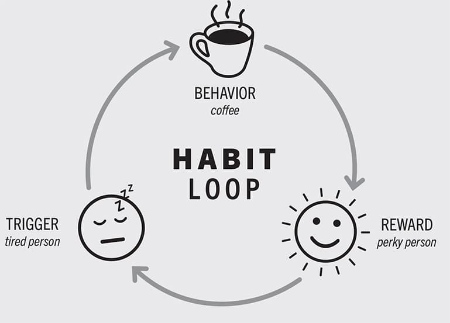
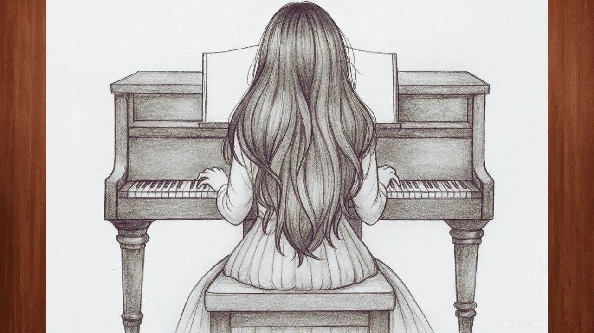

The power of habit: you'll get what you repeat
I strongly believe that there is a universal key to success, in study, business, politics, family etcetera. It explains: how mentally backwarded people can become champions at chess,
how plumber can become a UFC champion, how mountain guy can become a billionaire. And here my dear reader, even it can identify who you are.
I would like you to ask to take a break and write your idea where you want to succeeded. Only after that we start reading.
Many people believe success comes from big decisions or special talents, but writers like James Clear explain that everyday habits
often shape our lives more strongly than rare important moments. According to his ideas, small actions repeated every day can
slowly change a person’s future.
James Clear explains that habits are created through repetition. At first, people must make an effort, but later the behavior
becomes automatic. A student would study for only ten minutes a day, but after several months studying would become easier and
more natural. In the same way, unhealthy habits can also grow slowly. A person would eat junk food every evening or spend hours
online without noticing how much time was disappearing.
Habits strongly influence health, relationships, work, and emotions. For example, a person who would read every day usually
develops knowledge faster than someone who reads only sometimes. A runner who goes out jogging every single day, can be more
flexible than a person who runs twice faster but runs only twice a week.
The environment also affects habits. If healthy food is easier to reach, people would usually eat better meals. If phones and
distractions are everywhere, people would lose concentration more quickly. This means daily surroundings can support
either good or harmful routines.
Another important idea is that habits shape identity. A person who would practice music every day slowly becomes a musician.
Someone who would exercise regularly begins to see themselves as a healthy person. Small repeated actions become part of personality.
Tiny improvements repeated daily are often more powerful than one big effort. For example, a person who improves little by
little every week, and after one year their life could become completely different.
So, who is a successful athlete? A successful athlete is - who repeats running habits everyday.
Who is a successful musician? A successful musician is - who practices instruments everyday.
Who is a successful student? A successful student is - who repeats reading habits everyday.
Now, take a look at what you wrote and never forget - you'll get what you repeat.